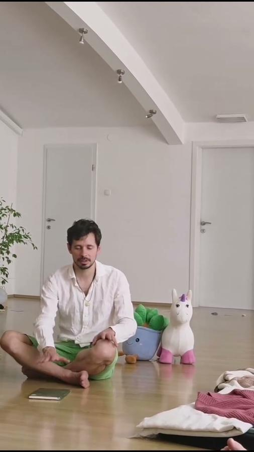
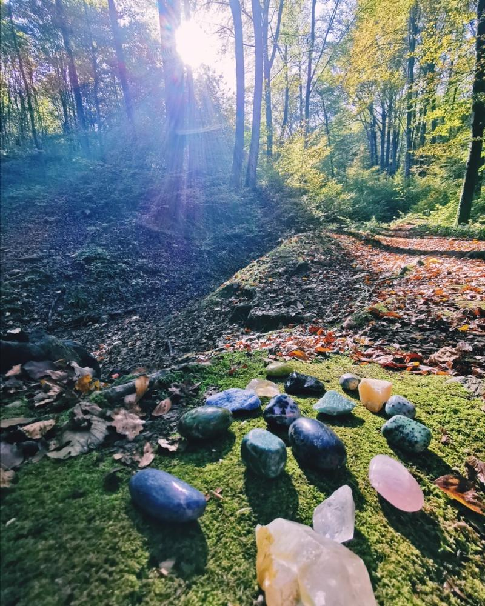
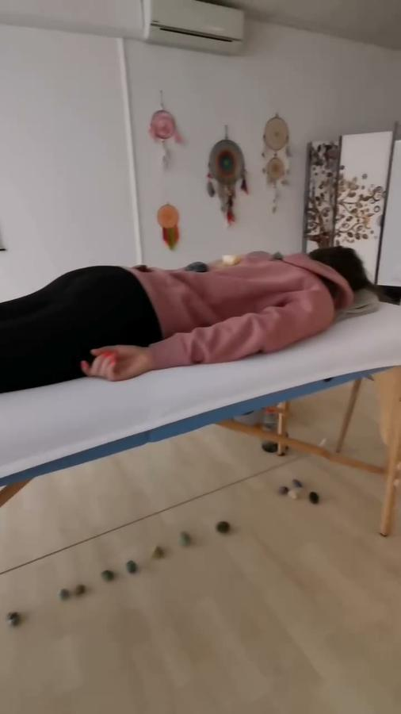
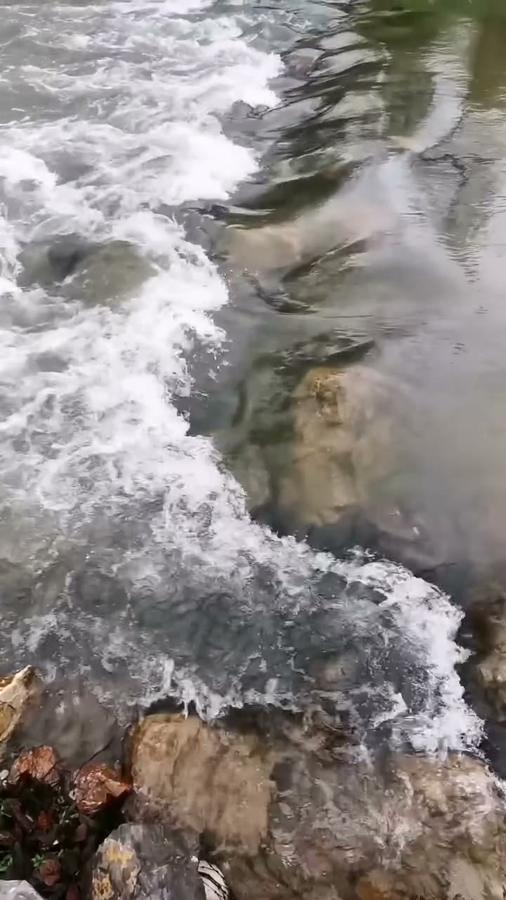

Za odrasle
Sliši sebe
Dogodki in srečanja za odrasle, ki želijo v življenje vključiti več lahkotnosti, smeha in jasnosti. Na lahkoten in igriv način: z igrami, rituali, glasbo in kanalizirano jasnostjo. Pleši v melodiji svojega srca.
Polje 5 · Dogodki v živo v Ljubljani
Srčni preboj – Sliši sebe
Sklop zavestnih dogodkov za odrasle v živo. Dogodki so med seboj povezani, a je vsak celota zase.
Preko iger, glasbe, smeha in tehnologije kanaliziranja te popeljem na unikatno potovanje v globine sebe, kjer lahko doživiš svoj preboj in prejmeš orodja, ki obogatijo tvoj vsakdan. Srčni preboj je lahko tvoj igrivi kompas, kako slišati sebe, vsak dan znova.
Naslednji dogodek
Srčne kreacije
nedelja, 20. 12. 2026 10.30–14.30 Ljubljana
Kreacije iz srca se dotikajo src. Dogodek je portal kreativnosti, lahkotnosti, obilja in srčnosti: ustvariš svojo srčno umetnino in prejmeš praktične korake, kako negovati svojo ustvarjalnost, strast in srčnost.
Vstopnica 55 € do 16. 12., nato 88 €. Točen naslov prejmeš ob prijavi.
Vsak dogodek zajema
- 3 ali 4 ure lahkotnega, prebojnega doživetja s pridihom igrivosti, miganja in jasnosti
- Igre, rituale in praktične napotke, vsakič za drugo področje
- Kanalizirano meditacijo, ritual ali sporočilo in posnetek sporočila z dogodka
- Poseben kristal za vsako osebo
- Sadno-zelenjavno malico z eliksirjem ali čajem
- Glasbeno spremljavo terapevtske glasbe
- Nova poznanstva, nova doživetja in nove priložnosti
Komu so dogodki namenjeni?
- Odraslim, ki želijo v svoje življenje vključiti več lahkotnosti.
- Ženskam in moškim, ki izbirajo nov premik, nov preboj.
- Staršem, ki bi radi prebudili in negovali svojega notranjega otroka.
Dogodki v letu 2026
- Ključi leta 2026
- Prebudi kreatorja
- Tempelj ljubezni
- Lahkotno živi svoje poslanstvo
- Svobodni vizionar
- Igraj se življenje
- Zaupaj vase

Polje 6 · V živo v Ljubljani ali online
Celestial Inspiration
Pretočno kanaliziranje: prenos jasnosti, sporočil duhovnega vodstva in energijske transmisije. Za premik, globlji vpogled, ponovno poravnavo s svojo dušo in bolj zavestno, lahkotnejše življenje.
Se ti zdi, da stojiš na mestu in ne veš, kako naprej? Iščeš premik, jasnost in energijsko podporo? Program poteka skozi tri srečanja.

-
Uvodno online srečanje
Kratko srečanje, kjer se poveževa. Skupaj pogledava, kako te kanaliziranje najbolje podpre in kako postaviti vprašanja, ki ti prinesejo največ jasnosti.
-
Kanaliziranje (1 ura)
V živo v Ljubljani ali online: sporočila duhovnega vodstva, energijska transmisija in prostor za tvoja konkretna osebna vprašanja.
-
Integracijsko online srečanje
Teden ali dva po kanaliziranju: podpora pri ljubeči integraciji sporočil in usmeritve za nadaljnje korake.
- 118 €v živo v Ljubljani
- 99 €online
Po želji tudi poglobljen cikel več srečanj: več kanaliziranj, meditacija po meri ali vpogled v dušno pogodbo.
Polje 7 · Individualno
Kristalni tretma
Kristalni tretma s pogovorno terapijo poteka v dveh delih. Moj namen je, da je tretma v največji ljubezni in lahkotnosti do tistega, ki ga prejema.
-

V studiu
Obdajajo te kristali in instrumentalna terapevtska glasba. Tretma podpre ena od energijskih tehnik, največkrat reiki.
-

V naravi ob vodi
Spustiš, kar je še za spustiti, in se odpreš vsemu, kar te v danem trenutku podpre.
Cena in trajanje tretmaja: dodamo
Kontakt
Če te kliče, da se srečamo
Pokliči, piši ali se prijavi na izbrani program. Z veseljem odgovorim na vsako vprašanje.
Prijave
- Lov za kristali za družine
- Kristalni rojstni dan povpraševanje
- Srčni preboj za odrasle
- Celestial Inspiration za odrasle
Za Počitniško doživetje, Kristalni tabor in Kristalni tretma me pokliči ali mi piši.